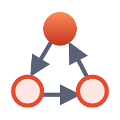
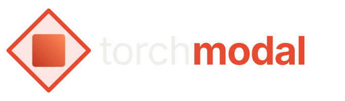

Same family as torchbelief: a solid core (the lower bound L) inside a lighter outline (the upper bound U), in torchmodal's existing red-orange.
The two operators are one shape turned 45°. The solid square is □, what must hold. The outlined diamond is ♢, what may hold. One sits inside the other (□φ → ♢φ), and the band between them is the [L, U] interval. Crisp at 16 px.
torchbelief's flame inside the possibility diamond. Reads instantly as a PyTorch sibling, but says less about modal logic itself.

A tidier version of the current logo: three worlds, accessibility arrows, one world lit. The most literal option. The arrows blur below 32 px, and the slate arrows are faint on dark backgrounds.
A diamond in interval brackets: "♢, but bounded". It echoes torchbelief's bracketed flame, but is less distinctive than A.
